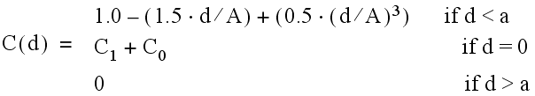

The KRIG2D function interpolates a regularly- or irregularly-gridded set of points z = f ( x, y ) using kriging.
The parameters of the data model – the range, nugget, and sill – are highly dependent upon the degree and type of spatial variation of your data, and should be determined statistically. Experimentation, or preferably rigorous analysis, is required.
For n data points, a system of n +1 simultaneous equations are solved for the coefficients of the surface. For any interpolation point, the interpolated value is:
The following formulas are used to model the variogram functions:
d( i,j ) = the distance from point i to point j .
V = the variance of the samples.
C( i,j ) = the covariance of sample i with sample j .
C( x 0 , y 0 , x 1 , y 1 ) = the covariance of point ( x 0 , y 0 ) with point ( x 1 , y 1 ).
Exponential covariance:
Spherical covariance:

Note: The accuracy of this function is limited by the single-precision floating-point accuracy of the machine.
This routine is written in the IDL language. Its source code can be found in the file krig2d.pro in the lib subdirectory of the IDL distribution.
Result = KRIG2D( Z [, X , Y ] [, EXPONENTIAL = vector ] [, SPHERICAL = vector ] [, / REGULAR ] [, XGRID = [xstart , xspacing] ] [, XVALUES = array ] [, YGRID = [ystart , yspacing] ] [, YVALUES = array ] [, GS = [xspacing , yspacing] ] [, BOUNDS = [xmin , ymin , xmax , ymax] ] [, NX = value ] [, NY = value ] )
Returns a two dimensional floating-point array containing the interpolated surface, sampled at the grid points.
Arrays containing the Z , X , and Y coordinates of the data points on the surface. Points need not be regularly gridded. For regularly gridded input data, X and Y are not used: the grid spacing is specified via the XGRID and YGRID (or XVALUES and YVALUES) keywords, and Z must be a two dimensional array. For irregular grids, all three parameters must be present and have the same number of elements.
Set this keyword to a two- or three-element vector of model parameters [A,C0, C1] to use an exponential semivariogram model. The model parameters are as follows:
A — The range . At distances beyond A , the semivariogram or covariance remains essentially constant.
C0 — The nugget , which provides a discontinuity at the origin.
C1 — If specified, C1 is the covariance value for a zero distance, and the variance of the random sample z variable. If only a two element vector is supplied, C1 is set to the sample variance. (C0 + C1) = the sill , which is the variogram value for very large distances.
Set this keyword to a two- or three-element vector of model parameters [A, C0, C1] to use a spherical semivariogram model. The model parameters are as follows:
A — The range . At distances beyond A , the semivariogram or covariance remains essentially constant.
C0 — The nugget , which provides a discontinuity at the origin.
C1 — If specified, C1 is the covariance value for a zero distance, and the variance of the random sample z variable. If only a two element vector is supplied, C1 is set to the sample variance. (C0 + C1) = the sill , which is the variogram value for very large distances.
If set, the Z parameter is a two dimensional array of dimensions ( n,m ), containing measurements over a regular grid. If any of XGRID, YGRID, XVALUES, or YVALUES are specified, REGULAR is implied. REGULAR is also implied if there is only one parameter, Z . If REGULAR is set, and no grid specifications are present, the grid is set to (0, 1, 2, ...).
A two-element array, [ xstart , xspacing ], defining the input grid in the x direction. Do not specify both XGRID and XVALUES.
An n -element array defining the x locations of Z[ i,j ]. Do not specify both XGRID and XVALUES.
A two-element array, [ ystart , yspacing ], defining the input grid in the y direction. Do not specify both YGRID and YVALUES.
An n -element array defining the y locations of Z[ i,j ]. Do not specify both YGRID and YVALUES.
If present, BOUNDS must be a four-element array containing the grid limits in x and y of the output grid: [ xmin, ymin, xmax, ymax ]. If not specified, the grid limits are set to the extent of x and y .
The output grid spacing. If present, GS must be a two-element vector [ xs, ys ], where xs is the horizontal spacing between grid points and ys is the vertical spacing. The default is based on the extents of x and y . If the grid starts at x value xmin and ends at xmax , then the default horizontal spacing is ( xmax - xmin )/(NX-1). ys is computed in the same way. The default grid size, if neither NX or NY are specified, is 26 by 26.
The output grid size in the x direction. NX need not be specified if the size can be inferred from GS and BOUNDS. The default value is 26.
The output grid size in the y direction. NY need not be specified if the size can be inferred from GS and BOUNDS. The default value is 26.
In the following example, we create an irregularly-gridded 3-D data set. The KRIG2D function interpolates the data at a specified grid size, and we plot the regularized surface.
; Make a random set of points that lie on a Gaussian:
N = 15
X = RANDOMU(seed, N)
Y = RANDOMU(seed, N)
; The Gaussian:
Z = EXP(-2 * ((X-.5)^2 + (Y-.5)^2))
; Get a 26 by 26 grid over the rectangle bounding x and y:
; Range is 0.25 and nugget is 0. These numbers are
; dependent on your data model
E = [ 0.25, 0.0]
; Get the surface:
R = KRIG2D(Z, X, Y, EXPON = E)
; Plot the resulting surface
WINDOW, /FREE, $
TITLE='Grid Data Interpolated by the KRIG2D Function'
SURFACE, R
Alternatively, get a surface over the unit square, with spacing of 0.05:
R = KRIG2D(Z, X, Y, EXPON=E, GS=[0.05, 0.05], BOUNDS=[0,0,1,1])
WINDOW, /FREE, $
TITLE='Grid Data Interpolated by the KRIG2D Function'
SURFACE, R
|
Pre 4.0 |
Introduced |